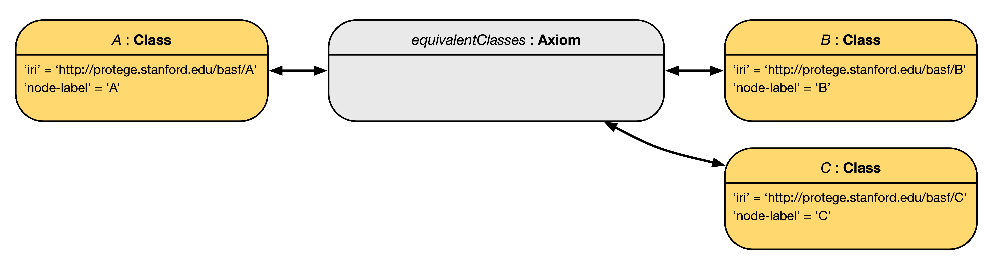
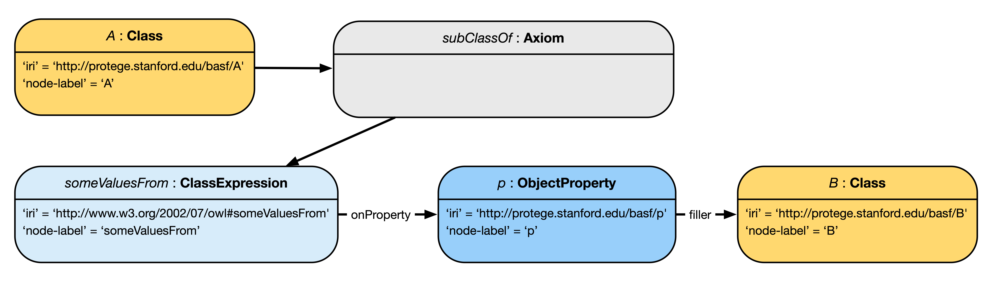
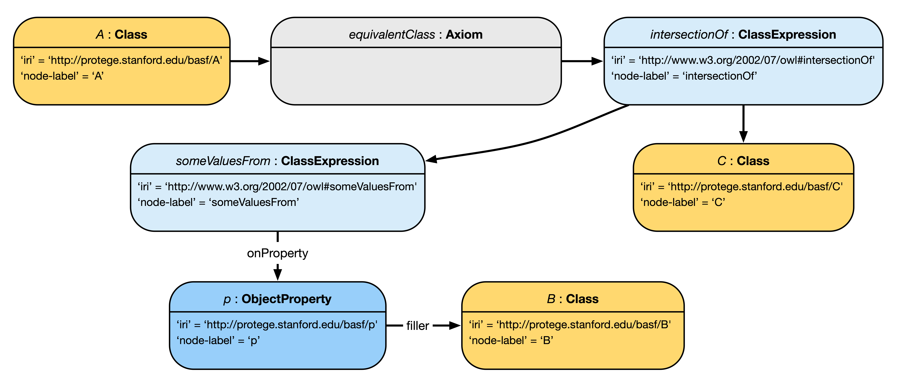
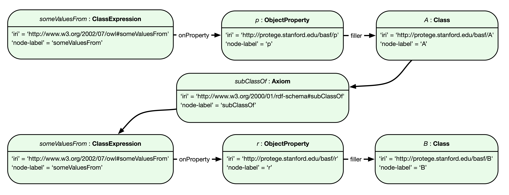
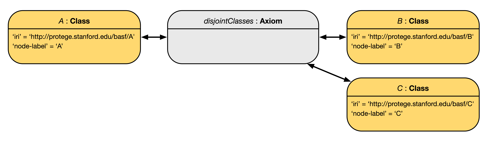
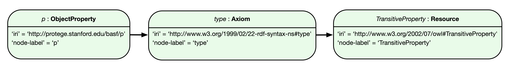
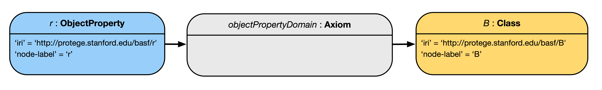

1 Introduction
This document specifies a model for converting OWL 2 EL axioms to a Labeled Property Graph (LPG) representation, and vice-versa. While initially targeted to convert OWL 2 EL ontologies, the design of this model is intended to be extensible to OWL 2 axioms of arbitrary expressivity.
1.1 Document conventions
OWL axioms are denoted using OWL Functional-Style syntax.
For succintness, the base prefix of OWL entities' IRIs is assumed to be http://protege.stanford.edu/basf/, and only denoted by the empty prefix ':' when we write out axioms.
For example, the entity with IRI http://protege.stanford.edu/basf/A is shortened to :A in axioms.
This document is formatted according to the W3C template for W3C Specifications.
1.2 Main Requirements
In this section we lay out important requirements that drive the design of the OWL-LPG conversion model.
1.2.1 Tooling Requirements
Here we enumerate illustrative examples of the kinds of queries that should be both easily expressible (in Cypher) and well performant for large knowledge bases. We use the WebProtégé cloud-based ontology editor as the baseline for performance. The goal is to achieve a query performance that is superior to the performance of executing the same queries in WebProtégé 4.0 (non-LPG).
Example queries:- Get the axioms in a frame for class
A. - Get the axioms that mention
A. - Get the revisions for an ontology
O. - Get the revisions that alter the frame for
A. - Get the authors of changes to
A. - Get the last changes for
A. - Get the axioms in the latest revision of
O.
1.2.2 BASF Use-Case Requirements
...
1.3 Design Choices
Our overarching design principle is to prioritize representational consistency over convenience (of query writing, of query response time, etc.). Below we describe in detail some key design choices, which serve to allow us to fulfil the requirements laid out in Section 1.2.
- OWL axiom types are represented as nodes in the LPG model.
- When converted to the LPG model, every OWL axiom is modeled with a single node that denotes the axiom type. For example,
rdfs:SubClassOfandowl:EquivalentClassesaxiom types will each be represented by its own node. This decision allows two things to happen:- We can encode OWL axiom annotations in a manner that is consistent with our overall representation of OWL entity annotations (as nodes attached to the annotated-entity node).
- We can attach versioning information about the axiom, such as the ontology that contains the axiom, and details about the author, the date, and the number of the revision that last altered the axiom (see Section 4 for full details).
- In general, every resource that has an IRI is represented as a node in the LPG model.
- All OWL named entities are represented as nodes.
- OWL class expression types are represented as nodes in the LPG model.
- This follows from the previous design choice. For example,
owl:someValuesFromandowl:intersectionOfclass expression types will each be represented by its own node. - Nodes denoting OWL Classes, Individuals, and Datatypes are reused. Other nodes are duplicated to guarantee unambiguous round-tripping between OWL and LPG.
- Upon converting from OWL to LPG, we generally reuse existing LPG nodes that denote OWL classes, individuals, and datatypes. The exception is when in the presence of General Concept Inclusion (GCI) axioms with a complex class expression as the subclass. In such cases, the nodes to represent the complex class expression in the subclass position of the GCI will not reuse existing nodes for the same entities in the LPG; they will be duplicated. We will duplicate all other nodes (e.g., OWL axiom types, OWL properties) as necessary to disambiguate how axioms should be parsed back from the LPG.
- For example, consider the axioms:
A SubClassOf p some B. A SubClassOf p some C. B SubClassOf D.Here, the nodes forAandBwould be reused, but the nodes forSubClassOf, p,andsomewould be duplicated. We duplicate theSubClassOfnode (and generally, axiom type nodes) to be able to attach axiom annotations and versioning information on individual axioms. We duplicate the other nodes to prevent ambiguity about the structure of each axiom when parsing the LPG. - The ability to parse OWL axioms from a LPG converted as specified here is guaranteed by the conditions that:
- every LPG node denoting an OWL class, individual, or datatype is followed by a node denoting an OWL axiom type; and
- nodes involved in a complex class expression in the subclass position of a GCI are duplicated (rather than reused) in the conversion.
- The result of this design choice is illustrated in Figure 24.
- An alternative strategy to encode sufficient information about axiom structure to allow round-tripping is by: Maintaining one node for each unique OWL resource (one node per IRI); Assigning globally unique identifiers to axioms; and then either:
- naming edges with the axiom identifier, e.g., edge between
AandSubClassOf, and so on; or - storing the axiom identifier in a key-value string property on the edges. As a consequence, we would potentially need to encode lists of axiom identifiers as values in string properties of LPGs.
- naming edges with the axiom identifier, e.g., edge between
1.4 Similar Models
In this section we compare and contrast the model described in this document with existing models to convert OWL ontologies to LPGs.
SciGraph. The SciGraph Neo4j Mapping aims to support representing multiple ontologies as a Labeled Property Graph. SciGraph reads ontologies with the OWL API and converts them to a LPG. SciGraph does not aim to support creating ontologies based on the LPG. Below we outline and briefly describe the main differences between ours and the SciGraph model.
- OWL axiom types are represented as edges in the LPG model. In the SciGraph model, axiom types such as
rdfs:subClassOfare encoded as edges between nodes that represent the left and the right hand side of the axiom. Axiom annotations are represented as key-value string properties on the edge that denotes the axiom type. In our model, axiom types are represented as nodes, and therefore axiom annotations are represented uniformly like other annotation assertions. - Annotation assertions are represented as key-value string properties in LPG model. For example,
i:Individual {'rdfs:label' = 'Ruth'}. As a consequence, annotations on annotations are not straightforwardly representable in SciGraph. - Representation of source ontology in SciGraph is done both at the node and edge level. In the SciGraph model, nodes have an outgoing edge named
isDefinedByto a node of typeOntologythat denotes the source ontology, and edges have a key-value string property to denote the source ontology IRI. In our model, the source ontology of axioms will be encoded as a node connected to the nodes denoting the axiom types (e.g.,rdfs:SubClassOf, rdf:Type, owl:EquivalentClasses). - SciGraph represents OWL properties as both nodes and edges in the LPG model. It represents OWL property types (functional, symmetric, etc.) as key-value properties on LPG nodes that represent the OWL properties (e.g.,
hasSibling:ObjectProperty {'symmetric' = true}). And then SciGraph uses OWL properties as edges in axioms such as object property assertions (e.g.,rafael:Individual --hasSibling--> ruth:Individual. In our model, we consistently represent OWL properties as nodes. More, we represent OWL property types similarly to the RDF/XML serialization of OWL. E.g.,hasSibling --> rdf:type --> owl:SymmetricProperty.
VirtualFlyBrain. The VirtualFlyBrain OWL 2 EL to Neo4J Mapping allows importing "a well defined subset of OWL 2 EL ontologies into and export them from Neo4J, in such a way that entailments and annotations are preserved (not however the syntactic structure) in the ontology after the round-trip." The VirtualFlyBrain (VFB) model is explicit about its design goal of facilitating intuitive writing of Cypher queries. In that sense, VFB does not create "anonymous" nodes to represent axiom types or class expression types, and instead encodes these details on edges (relying on both edge names and key-value string properties on edges).
- Object property names and axiom types are encoded as edge names. For example, the axioms:
A SubClassOf B. A SubClassOf r some Cwould be encoded in LPG as:A--SubClassOf-->B. A--r-->B. The restriction qualifiers (or quantifiers) are encoded as key-value properties on edges. - The VFB model represents OWL properties as both nodes and edges. Similar to SciGraph, OWL object properties are represented as edges, and then they are also represented as nodes to be able to express axioms such as annotations on those properties.
- Data and Annotation property assertions are represented as key-value string properties. Also similar to SciGraph, both data and annotation property assertions are represented as key-value string properties on nodes. As a consequence, annotations on annotations are not straightforwardly representable in VFB.
OWL2Neo4J. The OWL2Neo4J tool allows converting OWL ontologies to Labeled Property Graphs. The tool documentation states that it "only converts the class hierarchy; instances are ignored for now." Overall it is unclear what subset of the OWL language is supported, and whether round-tripping is feasible. This project looks defunct—it was last updated on September 2018.
2 Overview of OWL 2 EL
In this section we remind readers about what is and what is not supported in the OWL 2 EL profile. The remainder of this section is a verbatim copy of the OWL 2 EL Feature Overview section in the OWL 2 Profiles Specification.
The OWL 2 EL profile is designed as a subset of OWL 2 that:
- is particularly suitable for applications employing ontologies that define very large numbers of classes and/or properties,
- captures the expressive power used by many such ontologies, and
- for which ontology consistency, class expression subsumption, and instance checking can be decided in polynomial time.
2.1 Supported Class Restrictions
OWL 2 EL places restrictions on the type of class restrictions that can be used in axioms. In particular, the following types of class restrictions are supported:
- existential quantification to a class expression (ObjectSomeValuesFrom) or a data range (DataSomeValuesFrom)
- existential quantification to an individual (ObjectHasValue) or a literal (DataHasValue)
- self-restriction (ObjectHasSelf)
- enumerations involving a single individual (ObjectOneOf) or a single literal (DataOneOf)
- intersection of classes (ObjectIntersectionOf) and data ranges (DataIntersectionOf)
2.2 Supported Axioms
OWL 2 EL supports the following axioms, all of which are restricted to the allowed set of class expressions:
- class inclusion (SubClassOf)
- class equivalence (EquivalentClasses)
- class disjointness (DisjointClasses)
- object property inclusion (SubObjectPropertyOf) with or without property chains, and data property inclusion (SubDataPropertyOf)
- property equivalence (EquivalentObjectProperties and EquivalentDataProperties),
- transitive object properties (TransitiveObjectProperty)
- reflexive object properties (ReflexiveObjectProperty)
- domain restrictions (ObjectPropertyDomain and DataPropertyDomain)
- range restrictions (ObjectPropertyRange and DataPropertyRange)
- assertions (SameIndividual, DifferentIndividuals, ClassAssertion, ObjectPropertyAssertion, DataPropertyAssertion, NegativeObjectPropertyAssertion, and NegativeDataPropertyAssertion)
- functional data properties (FunctionalDataProperty)
- keys (HasKey)
2.3 Unsupported Constructs
The following constructs are not supported in OWL 2 EL:
- universal quantification to a class expression (ObjectAllValuesFrom) or a data range (DataAllValuesFrom)
- cardinality restrictions (ObjectMaxCardinality, ObjectMinCardinality, ObjectExactCardinality, DataMaxCardinality, DataMinCardinality, and DataExactCardinality)
- disjunction (ObjectUnionOf, DisjointUnion, and DataUnionOf)
- class negation (ObjectComplementOf)
- enumerations involving more than one individual (ObjectOneOf and DataOneOf)
- disjoint properties (DisjointObjectProperties and DisjointDataProperties)
- irreflexive object properties (IrreflexiveObjectProperty)
- inverse object properties (InverseObjectProperties)
- functional and inverse-functional object properties (FunctionalObjectProperty and InverseFunctionalObjectProperty)
- symmetric object properties (SymmetricObjectProperty)
- asymmetric object properties (AsymmetricObjectProperty)
3 Conversion of OWL to Labeled Property Graph
In this section we specify rules for converting OWL axioms and class expressions expressible in the OWL 2 EL profile to a labeled property graph.
Throughout this section we use the color scheme depicted below to denote the different types of OWL entities (left column) and other OWL resources (right column): types of axioms (e.g., subClassOf, classAssertion); types of class expressions (e.g., someValuesFrom, intersectionOf); literals; ontologies; and IRI resources.
3.1 Class Axioms
OWL classes are represented as nodes in the LPG model.
3.1.1 SubClassOf Axioms
SubClassOf( :A :B )

3.1.2 EquivalentClasses Axioms
Given an EquivalentClasses axiom such as the one below, it would be semantically sufficient to represent it in a LPG using edges in just one direction. However, when querying the LPG, we would not be able to immediately determine that, say, B is equivalent to A. By having edges in both directions, like we have (succintly) depicted in the figure below, we can promptly find that C is equivalent to B as well as A.
EquivalentClasses( :A :B :C )

3.1.3 SubClassOf Axioms with SomeValuesFrom Restrictions
SubClassOf( :A ObjectSomeValuesFrom( :p :B ) )

3.1.4 EquivalentClasses Axioms with IntersectionOf and SomeValuesFrom Restrictions
EquivalentClasses( :A ObjectIntersectionOf( :C ObjectSomeValuesFrom( :p :B )))

3.1.5 SubClassOf GCI Axioms
SubClassOf(ObjectSomeValuesFrom( :p :A ) ObjectSomeValuesFrom( :r :B ))

3.1.6 DisjointClasses Axioms
DisjointClasses( :A :B :C )

3.1.6 SubClassOf Axioms with HasSelf Restrictions
SubClassOf( :A ObjectHasSelf( :p ) )

3.2 Property Axioms
OWL object, data, and annotation properties are represented as nodes in the LPG model.
3.2.1 SubPropertyOf Axioms
SubObjectPropertyOf( :p :r )
Note:The same strategy applies for SubDataPropertyOf and SubAnnotationPropertyOf axioms.
3.2.2 PropertyChain Axioms
SubObjectPropertyOf( ObjectPropertyChain( :p :q ) :r )
3.2.3 TransitiveProperty Axioms
TransitiveObjectProperty( :p )

Note:The same strategy applies for other OWL property characteristics (e.g., symmetric properties).
3.2.4 PropertyDomain (and Range) Axioms
ObjectPropertyDomain( :p :A )

Note:ObjectPropertyRange axioms are represented similarly, by just swapping the objectPropertyDomain node by the objectPropertyRange node. The same strategy applies for dataPropertyDomain, dataPropertyRange, annotationPropertyDomain, and annotationPropertyRange axioms.
3.3 Individual Axioms
OWL individuals are represented as nodes in the LPG model.
3.3.1 ClassAssertion Axioms
ClassAssertion( :A :i )
3.3.2 ObjectPropertyAssertion Axioms
ObjectPropertyAssertion( :p :i :j )
3.3.3 ClassAssertion Axioms with SomeValuesFrom Restrictions
ClassAssertion( ObjectSomeValuesFrom( :p :A ) :i )
3.3.4 SameIndividual Axioms
SameIndividual( :i :j )
3.3.5 DifferentIndividuals Axioms
DifferentIndividuals( :i :j :k )
3.4 Annotation Axioms
OWL annotation properties, the subject and object IRIs of annotation assertions, OWL 2 datatypes, and literals are all represented as nodes in the LPG model. Axiom annotations are represented using an edge named axiomAnnotation from the annotationAssertion axiom node to the annotation property node (see Section 3.4.3). Naming the edge corresponding to axiom annotations is necessary to differentiate axiom annotations from other annotations, particularly in cases such as annotations on annotations (see Section 3.4.4).
3.4.1 AnnotationAssertion Axioms
AnnotationAssertion( :p :i :j )
3.4.2 AnnotationAssertion Axioms with Language-Tagged Literals
AnnotationAssertion( :p :i "foo"@en )
3.4.3 Axiom Annotations
SubClassOf( Annotation( :p "foo"^^xsd:string ) :A :B) )
3.4.4 Annotations on Annotations
AnnotationAssertion( Annotation( :q "bar"@en ) :p :i :j )
3.5 Keys
HasKey( :A ( :r ) () )

3.6 Punning
ObjectPropertyAssertion( :p :i :j )
SubClassOf( :i :K )
3.7 Ontology Imports
Ontology( :O Import ( :T ) )
3.8 Multiple Axioms Example
This section exemplifies how the axiom conversions specified above would concretize for a set of axioms. Given the following axioms, the resulting LPG is depicted in the figure below.EquivalentClasses( :A :E )
SubClassOf(
Annotation( dc:date "2020-02-25T21:20:36"^^xsd:dateTime )
:A :C )
SubClassOf(
Annotation( dc:date "2020-02-25T21:32:52"^^xsd:dateTime )
:A ObjectSomeValuesFrom( :p :D ))
AnnotationAssertion( skos:definition :B "foo."@en )
SubClassOf(
Annotation( dc:creator :mhorridge )
:B ObjectIntersectionOf( :A ObjectSomeValuesFrom( :p :F )))
ObjectPropertyAssertion(
Annotation( dc:creator :rsgoncalves )
:w :mhorridge :stanfordUniversity )
ObjectPropertyAssertion( :w :rsgoncalves :stanfordUniversity )
4 Representing OWL Axiom Change History in a LPG
AddAxiom( SubClassOf( :A :B ), branch B, ontology O )
Appendix: Change Log
In this section we record all major changes to the document, in reverse chronological order.February 27, 2020- Added section SubClassOf Axioms with HasSelf Restrictions.
- Added section SameIndividual Axioms.
- Added section DifferentIndividuals Axioms.
- Added section Keys Axioms.
- Added section DisjointClasses Axioms.
February 26, 2020- Modified section Design Choices to clarify the decision on node duplication.
- Updated section Multiple Axioms.
- Added paragraph Color Scheme.
- Updated all diagrams with the new color coding scheme.
February 25, 2020- Added section Multiple Axioms.
February 21, 2020- Extended section Design Choices to clarify the decision on node duplication.
- Added section Ontology Imports.
February 20, 2020- Extended section Design Choices.
- Added section Similar Models.
- Added section Annotations on annotations.
- Added source control link to GitHub repository for this specification.
February 14, 2020- Added section Representing OWL axiom change history.
- Added section Tooling Requirements.
- Added this section to track the document's changes.
- Modified strategy to represent property assertions: The axiom type node now follows the node of the subject of the assertion. This is consistent with the representation of other axiom types, and allows unambiguous re-construction of the assertion when the subject is involved in other axioms.
February 13, 2020- Modified strategy to represent literals. See Axiom Annotations and Annotation Assertion sections.
- Added section Design Choices.
- Added section PropertyDomain (and Range) axioms.
- Added section Punning.